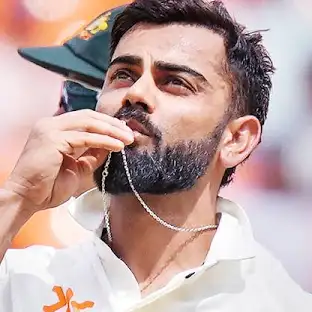
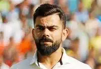
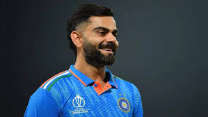

Learn about Shivaji Maharaj, Learn about Rohit Sharma, Learn about MS Dhoni.



Virat Kohli (born 5 November 1988) is an Indian international cricketer and former captain of the Indian national team. Widely regarded as one of the best batsmen in the world, Kohli plays for Royal Challengers Bangalore in the IPL and for Delhi in domestic cricket. He has numerous records in all formats and is known for his passion, consistency, and fitness. He led India to several memorable victories and remains a key figure in Indian cricket.
Early life
Kohli was born on 5 November 1988 in Delhi into a Punjabi Hindu family. His mother Saroj Kohli is as a housewife while his father Prem Nath Kohli worked as a criminal lawyer. He has an elder brother Vikas and an elder sister Bhawna. His formative years were spent in Uttam Nagar. His early education was at Vishal Bharti Public School. As per his family, Kohli exhibited an early affinity for cricket as a 3-year-old. He would pick up a bat and request his father bowl to him.
In 1998, the West Delhi Cricket Academy was created. In May, his father arranged for him to meet Rajkumar Sharma. Upon the suggestion of their neighbours, Kohli's father considered enrolling his son in a professional cricket academy, as they believed his ability merited more than gully cricket.[17] He was unable to secure a place in the U-14 Delhi team, due to extraneous factors. His father reportedly received offers to relocate his son to influential clubs, which would ensure his selection, but he declined the proposals.
Kohli found his way into the U-15 team. He received training at the academy and participated in matches at the Sumeet Dogra Academy located at Vasundhara Enclave.[18] In pursuit of furthering his cricketing career, he transferred to Saviour Convent School during his ninth-grade education.
On 18 December 2006, his father died due to a cerebral attack.[17][15] As per his mother, Kohli's demeanour shifted noticeably after his father's death. He took on cricket with newfound seriousness, prioritizing playing time and dedicating himself fully to the sport. Kohli's family resided in Meera Bagh, Paschim Vihar until the year 2015, after which they relocated to Gurgaon.